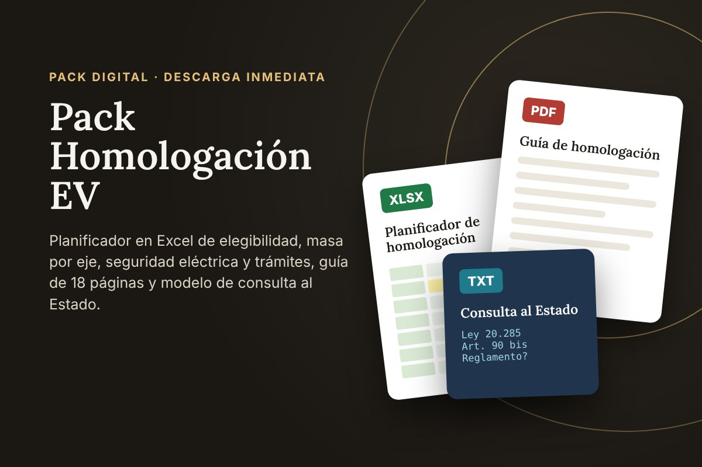
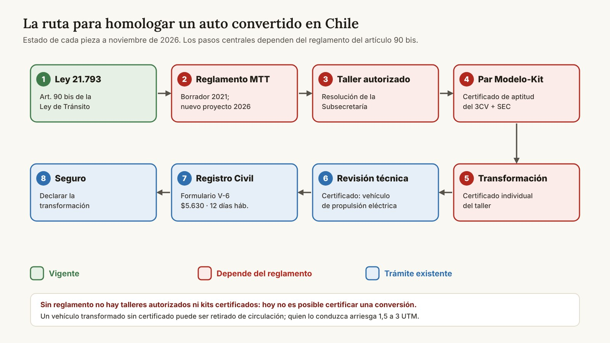

Qué cubre esta guía
- Dónde está la normativa (noviembre de 2026)
- El marco legal: ley vigente, reglamento pendiente
- Qué vehículos podrían convertirse
- El concepto clave: el «Par Modelo-Kit»
- Qué se le exigiría al taller autorizado
- Los requisitos técnicos que se verificarían
- Los dos certificados previstos
- El proceso previsto, paso a paso
- Plazos y costos: lo que se sabe
- Sanciones
- Errores que hacen perder tiempo y dinero
- Qué hacer mientras tanto
- Conclusión
- Preguntas frecuentes

Pack Homologación EV: prepárate mientras llega el reglamento
Todo lo de esta guía, convertido en herramientas: revisa si tu auto calificaría, calcula la masa por eje antes de comprar baterías y ten el expediente listo para cuando exista el procedimiento.
- Planificador en Excel (8 hojas): elegibilidad según el borrador, cambio de masa y de reparto por eje frente a los límites de 20 % y 10 %, aislamiento mínimo según el voltaje del pack y continuidad de masas, comparación de talleres, expediente, trámites y bitácora normativa.
- Guía en PDF (18 páginas): qué rige y qué falta, el artículo 90 bis explicado, el borrador en diez puntos, cómo evaluar un taller, la seguridad eléctrica que se verificará, certificados, Registro Civil, seguro y qué hacer si ya convertiste.
- Modelo de consulta al Estado: texto listo para preguntar por Ley de Transparencia por el reglamento, los talleres y los kits, más el diagrama de la ruta de trámites.
Al pagar descargas un archivo .zip con el planificador (.xlsx), la guía (.pdf), el modelo de consulta (.txt), el diagrama (.png) y las instrucciones. El planificador se abre en Excel, LibreOffice y Google Sheets. Material informativo: no constituye asesoría legal ni reemplaza la certificación oficial. Licencia de uso personal. Por ser contenido digital de descarga inmediata, no tiene derecho a retracto; si un archivo llega dañado o no abre, te lo reponemos o devolvemos el dinero.

Durante años, convertir un auto a eléctrico en Chile era técnicamente posible y administrativamente imposible. Existían talleres capaces de hacerlo, pero no había un procedimiento oficial para certificar el resultado. En diciembre de 2019, además, el Ministerio de Transportes envió una circular a sus secretarías regionales instruyendo a las plantas de revisión técnica a no revisar vehículos convertidos.
La Ley N.º 21.793, publicada en el Diario Oficial el 14 de enero de 2026, agregó el artículo 90 bis a la Ley de Tránsito N.º 18.290. Permite al Ministerio de Transportes y Telecomunicaciones (MTT) autorizar talleres que transformen vehículos a propulsión eléctrica, fija sanciones y deja el detalle técnico a un reglamento del Ministerio.
Ese reglamento es la pieza que falta. Esta guía separa lo que ya rige de lo que está pendiente, explica qué proponía el borrador que la Subsecretaría de Transportes sometió a consulta pública y muestra cómo prepararse. Si aún estás evaluando el proyecto, revisa antes cuánto cuesta convertir un auto a eléctrico en Chile.
Dónde está la normativa (noviembre de 2026)
| Pieza | Estado | Qué significa para ti |
|---|---|---|
| Ley N.º 21.793 (art. 90 bis de la Ley de Tránsito) | Vigente desde el 14 de enero de 2026 | Existe la base legal y las sanciones ya están en la ley. |
| Reglamento de transformación | Pendiente. No lo encontramos publicado en el Diario Oficial | Sin reglamento no hay procedimiento para autorizar talleres ni certificar kits. |
| Borrador de reglamento de 2021 | Sometido a consulta pública entre el 15 y el 31 de diciembre de 2021 | Es la referencia pública más detallada, pero puede cambiar. |
| Nuevo proyecto de reglamento | Elaborado por el MTT según su Cuenta Pública 2026; texto no publicado | Habrá que comparar su versión final con el borrador. |
| Talleres autorizados y pares modelo-kit | No encontramos ninguno informado | Hoy no hay una vía para certificar una conversión. |
| Revisión técnica e inscripción de alteraciones | Trámites existentes | Se usarán al final del proceso, una vez que exista el certificado de la transformación. |
Prensa especializada lo confirmaba a fines de julio de 2026: el despliegue de la ley depende de la "pronta publicación de su reglamento técnico". En su Cuenta Pública 2026, el MTT informó que "se elaboró un nuevo proyecto de reglamento" para la transformación de vehículos, en el marco del artículo 90 bis.
El marco legal: ley vigente, reglamento pendiente
El artículo 90 bis establece cinco cosas:
- Autorización de talleres. El MTT puede autorizar establecimientos que transformen vehículos en uso de combustión interna a propulsión eléctrica, y otras adaptaciones que afecten la seguridad vial.
- Reglamento. Las transformaciones deben seguir los reglamentos del Ministerio, que fijan los alcances técnicos y procedimientos según el modelo del vehículo. Los aranceles también se fijan por reglamento.
- Talleres autorizados que no cumplen: revocación de la autorización.
- Talleres sin autorización: la multa del inciso segundo del artículo 180 de la Ley de Tránsito.
- Vehículos sin certificado: retiro de circulación y multa de 1,5 a 3 UTM a quien conduzca.
Cuando el reglamento esté vigente, entrarán en juego otros dos actores: la Superintendencia de Electricidad y Combustibles (SEC), que según el borrador autorizaría los componentes eléctricos del kit, y el Centro de Control y Certificación Vehicular (3CV) del MTT, que certificaría cada combinación de modelo y kit. Al final se usan dos trámites que ya existen: la revisión técnica en una planta (PRT) y la inscripción de la alteración en el Registro Nacional de Vehículos Motorizados del Registro Civil.
Qué vehículos podrían convertirse
Lo que sigue viene del borrador de 2021. Es la mejor pista disponible, pero confirma cada punto en el reglamento que se publique.
| Criterio | Qué proponía el borrador |
|---|---|
| Sistemas electrónicos de seguridad | Excluye vehículos con ABS, control de estabilidad (ESP), control de tracción, airbags o asistencias como frenado de emergencia, detector de punto ciego, mantención de carril o asistente de velocidad. |
| Kit específico | Debe existir un kit de transformación certificado para la marca y el modelo. |
| Tipo de vehículo | Vehículos de pasajeros o carga con peso bruto vehicular menor a 3.860 kg; también buses y minibuses de transporte público o privado remunerado. |
| Importados por zona franca | Excluye vehículos usados livianos y medianos importados bajo el régimen de Zona Franca de Extensión. |
| Masa en orden de marcha | No puede variar más de un 20 % respecto del vehículo original. |
| Reparto de masa por eje | No puede variar más de un 10 %. |
| Dimensiones y cargas | Sin cambios de largo, ancho, alto, distancia entre ejes, voladizos, peso bruto ni cargas máximas por eje. |
| Reversibilidad | Un vehículo transformado no puede volver a combustión interna. |
El concepto clave: el «Par Modelo-Kit»
En el borrador, el kit eléctrico de transformación es el conjunto de componentes eléctricos definido para un modelo específico. La combinación de un modelo con su kit se llama Par Modelo-Kit y es lo que se certifica: el solicitante presenta un vehículo representativo ya transformado, con su informe técnico, planos de los circuitos de alta y baja tensión, configuración de las baterías, datos del motor y un documento de seguridad para rescate y remolque.
Según el borrador, cuatro componentes requerirían autorización de la SEC:
- Módulos, paquetes y sistemas de baterías, con celdas secundarias de litio.
- Sistema de acoplamiento de carga (la toma del vehículo).
- Cargador a bordo. El borrador pedía además un ensayo de carga del 20 al 80 % que cumpla los límites de distorsión armónica de corriente de la norma técnica de calidad de servicio.
- Dispositivo de monitoreo de aislamiento.
La SEC tendría seis meses desde la publicación del reglamento para fijar, por resolución, las normas y el procedimiento de esas autorizaciones.
Consecuencia práctica: si nadie certifica un kit para tu modelo, tu auto no podrá convertirse legalmente. Alguien (un taller, un importador o un grupo de dueños) tendrá que financiar la certificación de ese par, y ese costo se repartirá entre las conversiones futuras del mismo modelo. Lo esperable es que el mercado se concentre en pocos modelos populares.
Qué se le exigiría al taller autorizado
Según el borrador, la autorización la otorga la Subsecretaría de Transportes por resolución, con un extracto publicado en el Diario Oficial. Es la forma de verificar que un taller está autorizado: pídele el número de su resolución y búscala.
Personal técnico
- Un responsable técnico con título de ingeniero civil electricista, ingeniero de ejecución electricista o equivalente.
- Al menos un instalador eléctrico autorizado por la SEC (D.S. N.º 92 de 1983).
- Al menos un mecánico con formación técnica automotriz.
- Capacitación de todo el personal técnico en sistemas eléctricos vehiculares, prevención de riesgos y normativa.
Instalaciones
- Zona de armado techada, pavimentada, ventilada e iluminada.
- Perímetro de trabajo en alta tensión con conexión a tierra, punto de descarga y el letrero «Peligro – Zona de Trabajo Alta Tensión».
Equipamiento
- Herramientas mecánicas y eléctricas, y elementos de protección personal.
- Voltímetro de corriente alterna y continua (en continua, con resistencia interna de al menos 10 MΩ) y amperímetro.
- Medidor de aislamiento de 5 kV, sondas de ensayo según el anexo 3 del reglamento UN ECE R100, osciloscopio, analizador de baterías y cámara termográfica.
- Cargador de vehículo eléctrico modo 3 o modo 4 y analizador de red que mida distorsión armónica de corriente, distorsión de voltaje y flicker.
- Certificados de calibración vigentes de los instrumentos.
Registro de vehículos transformados
El taller llevaría una nómina con patente, marca, modelo, año, VIN, número del motor eléctrico, fecha de la transformación y componentes principales. La guardaría al menos cinco años y enviaría cada mes un listado al 3CV.
Los requisitos técnicos que se verificarían
El borrador define como alta tensión los circuitos que operan sobre 60 V en corriente continua (hasta 1.500 V) o sobre 30 V en corriente alterna (valor eficaz, hasta 1.000 V). Casi cualquier pack de tracción entra en esa categoría.
| Requisito | Criterio del borrador |
|---|---|
| Identificación de cables | Cables de alta tensión fuera de envolventes con cubierta exterior naranja |
| Protección contra contacto directo | Grado IPXXD dentro del habitáculo y del maletero; IPXXB en el resto |
| Descarga de conectores | Bajar a 60 V en continua o 30 V en alterna dentro de 1 segundo tras desconectar |
| Contacto indirecto (masas) | Menos de 0,1 Ω entre partes conductoras expuestas y chasis, medido con al menos 0,2 A |
| Resistencia de aislamiento | Al menos 100 Ω por volt en circuitos de continua y 500 Ω por volt en circuitos de alterna o combinados |
| Baterías (REESS) | Envolvente protegida contra la inmersión temporal (el borrador cita «IPX67»), indicador de estado visible para el conductor y aviso cuando el auto está listo para moverse |
| Bloqueo durante la carga | El vehículo no puede moverse con el cargador externo conectado |
| Toma de carga | Aislamiento de al menos 1 MΩ con el cargador desconectado |
| Sobrecorriente | Dispositivo de corte por sobrecorriente |
| Monitoreo de aislamiento | Monitor permanente con lectura y alarma en el tablero; bajo 100 Ω/V no se energiza el circuito de carga. No puede ser el BMS el que haga la medición |
| Sistemas del vehículo | Frenos, dirección, luces, desempañador, calefacción y demás sistemas existentes funcionando |
Los dos certificados previstos
El borrador distingue entre certificar un diseño y certificar un vehículo concreto. Confundirlos es un error frecuente.
| Certificado de Aptitud | Certificado Individual | |
|---|---|---|
| Qué certifica | El Par Modelo-Kit (el diseño) | Cada vehículo transformado |
| Quién lo emite | El MTT a través del 3CV | El taller autorizado, con firma electrónica avanzada |
| Frecuencia | Una vez por modelo y kit; vale mientras no cambien los componentes | Uno por vehículo |
| Contenido | Modelos cubiertos y características de los componentes del kit | Identificación del vehículo, del emisor y de los componentes usados |
| Destino | El 3CV lo informa a las plantas de revisión técnica a través de las Seremis | Se entrega en la planta de revisión técnica, que lo retiene |
El proceso previsto, paso a paso
Este es el recorrido que se desprende de la ley y del borrador. Los pasos 1 y 2 puedes hacerlos hoy; los pasos 3 a 6 requieren que el reglamento esté vigente.
Paso 1 — Revisa la elegibilidad del vehículo
Confirma el equipamiento exacto (ABS, airbags, control de estabilidad o tracción, asistencias), el peso bruto vehicular, que no sea un usado importado por zona franca y que su documentación esté al día. Haz el cálculo de masa: lo que sale, lo que entra y cómo queda el reparto por eje.
Paso 2 — Arma el expediente del vehículo
Reúne padrón, revisión técnica, ficha técnica del modelo, masas por eje y fotos del estado actual. Si vas a comprar componentes, guarda facturas y fichas técnicas: el motor eléctrico, en particular, deberá acreditarse con factura, contrato de compraventa o documentos de importación.
Paso 3 — Elige un taller autorizado con un Par Modelo-Kit certificado
Pide por escrito el número de la resolución de autorización del taller, el certificado de aptitud del par para tu modelo y las autorizaciones SEC de los componentes. Sin esos tres documentos, no hay conversión legal posible.
Paso 4 — Transformación y certificado individual
El taller hace el trabajo, mide aislamiento, continuidad de masas y el bloqueo durante la carga, y emite el certificado individual de transformación con firma electrónica avanzada. Pide copia de las mediciones y de la nómina donde quedó registrado tu vehículo.
Paso 5 — Revisión técnica
Según el borrador, la planta verifica que el vehículo corresponda a la configuración certificada, retiene el certificado individual y el certificado de revisión anterior, y emite uno nuevo que indica "vehículo de propulsión eléctrica", con el número del motor.
Paso 6 — Inscripción de la alteración en el Registro Civil
Con el nuevo certificado de revisión técnica, se inscribe el cambio de motor en el Registro Nacional de Vehículos Motorizados. Este trámite ya existe:
| Aspecto | Detalle |
|---|---|
| Formulario | V-6, se pide en la oficina |
| Modalidad | Presencial, con hora reservada en línea |
| Dominio del motor | Factura, contrato de compraventa o documentos que acrediten que el dueño importó el motor |
| Certificado técnico | Certificado de revisión técnica vigente o certificado de inspección visual de una planta autorizada por el MTT |
| Valor | $5.630 |
| Plazo de respuesta | Hasta 12 días hábiles |
Paso 7 — Seguro y permiso de circulación
Informa la transformación a tu compañía de seguros: una póliza contratada para un auto a combustión puede objetar la cobertura de un vehículo modificado sin declararlo. Al renovar el permiso de circulación, la municipalidad trabajará con las características inscritas.
Plazos y costos: lo que se sabe
Como el reglamento no está publicado, la mayoría de los plazos y valores todavía no existen. La ley indica que los aranceles se fijarán por reglamento.
| Etapa | Plazo | Costo |
|---|---|---|
| Certificación del Par Modelo-Kit (3CV) | Por definir | Arancel por fijar en el reglamento; lo financia el titular del kit |
| Transformación y certificado individual | Según el taller | Según cotización |
| Revisión técnica | 1 día | Tarifa de la planta |
| Inscripción de la alteración | Hasta 12 días hábiles | $5.630 |
| Autorizaciones SEC de componentes | Por definir (6 meses para fijar el procedimiento, según el borrador) | Por definir |
Desconfía de cualquier presupuesto que hoy incluya un "costo de homologación" cerrado: los valores oficiales todavía no se conocen.
Sanciones
Las sanciones ya están vigentes porque vienen de la ley, no del reglamento:
- Taller autorizado que transforme modelos no autorizados o no siga el procedimiento: revocación de la autorización.
- Establecimiento sin autorización que haga transformaciones reguladas: la multa del inciso segundo del artículo 180 de la Ley de Tránsito, de 3 a 20 UTM.
- Vehículo transformado sin el certificado exigido: Carabineros o inspectores fiscales o municipales pueden retirarlo de circulación y ponerlo a disposición del juzgado; quien conduzca arriesga una multa de 1,5 a 3 UTM.
Errores que hacen perder tiempo y dinero
- Convertir antes de que exista el reglamento. Hoy no hay forma de certificar el resultado, y el auto puede quedar sin poder circular legalmente.
- Pagar por adelantado una "homologación". Mientras no haya talleres autorizados, nadie puede prometer un certificado.
- Elegir el auto sin revisar su equipamiento. Un airbag o un ABS lo deja fuera, según el borrador.
- No calcular la masa. Superar el 20 % o mover demasiado el reparto por eje puede hacer inviable el proyecto.
- Comprar componentes sin documentación. Baterías, cargador, toma y monitor de aislamiento necesitarían autorización SEC. Sin factura ni ficha técnica, no hay forma de acreditarlos.
- No guardar la factura del motor. El Registro Civil la pide para inscribir el cambio de motor.
- No declarar la conversión al seguro. Deja la póliza en una zona gris justo cuando más se necesita.
Qué hacer mientras tanto
- Monitorea el Diario Oficial y la Subsecretaría de Transportes. Cuando se publique el reglamento, compáralo con el borrador: elegibilidad, masas, certificados y aranceles.
- Pregunta formalmente. Puedes consultar por OIRS o por Ley de Transparencia al MTT el estado del reglamento y si hay talleres autorizados.
- Prepara el expediente. Equipamiento, masas por eje, documentos y fotos del auto. Te ahorrará semanas cuando el procedimiento exista.
- Evalúa con números. Calcula autonomía, costo y retorno antes de elegir el auto; ese trabajo no depende del reglamento.
- Si ya tienes un auto convertido, no asumas que la ley lo regularizó. Consulta en la Seremi de Transportes de tu región cuál es su situación.
Conclusión
La Ley N.º 21.793 dio a Chile la base legal para el retrofit, pero no un procedimiento listo para usar. A noviembre de 2026, el reglamento que debe definir talleres, kits, certificados y aranceles no está publicado, y sin él no hay forma de certificar una conversión.
El borrador de 2021 muestra hacia dónde apunta el sistema: kits certificados por modelo, componentes autorizados por la SEC, talleres con ingenieros e instrumentos calibrados, límites de masa y una revisión técnica que reconoce la propulsión eléctrica. Usa esa información para elegir bien el auto y preparar la documentación, pero no para convertir todavía.
Para la planificación técnica del proyecto, revisa baterías LFP vs NMC para conversiones eléctricas y cómo elegir el motor eléctrico para tu conversión.
Preguntas frecuentes
¿Es legal convertir un auto a eléctrico en Chile?
La Ley N.º 21.793, vigente desde el 14 de enero de 2026, permite que talleres autorizados por el MTT transformen vehículos a propulsión eléctrica según un reglamento del Ministerio. A noviembre de 2026 ese reglamento no está publicado, así que todavía no existe un procedimiento para certificar una conversión. Un vehículo transformado sin el certificado exigido puede ser retirado de circulación.
¿Ya hay talleres autorizados para convertir autos?
No encontramos ninguno informado. Según el borrador de reglamento, la autorización se otorgaría por resolución de la Subsecretaría de Transportes con un extracto publicado en el Diario Oficial. Si un taller dice estar autorizado, pídele el número de esa resolución.
¿Qué es el Par Modelo-Kit?
Es la combinación certificada de un modelo de vehículo con un kit eléctrico diseñado para ese modelo. Según el borrador, la certifica el MTT a través del 3CV con un vehículo representativo, y las baterías, la toma de carga, el cargador a bordo y el monitor de aislamiento necesitan autorización de la SEC.
¿Puedo convertir cualquier auto?
No. El borrador excluye vehículos con ABS, control de estabilidad o tracción, airbags o asistencias a la conducción, y limita el cambio de masa en orden de marcha a un 20 % y el del reparto por eje a un 10 %. También excluye usados importados por zona franca. Revisa el equipamiento exacto de tu auto, no solo su año.
¿Qué certificados se necesitarán?
Según el borrador, dos: el certificado de aptitud del Par Modelo-Kit, que emite el MTT a través del 3CV, y el certificado individual de cada vehículo, que emite el taller autorizado con firma electrónica avanzada. La planta de revisión técnica retiene el certificado individual y emite un certificado que indica "vehículo de propulsión eléctrica".
¿Cómo se inscribe el cambio de motor en el Registro Civil?
Con el formulario V-6, en forma presencial y con hora reservada en línea. Se presenta un documento que acredite el dominio del motor (factura, compraventa o documentos de importación) y el certificado de revisión técnica o de inspección visual de una planta autorizada. Cuesta $5.630 y la respuesta llega en un plazo máximo de 12 días hábiles.
¿Qué requisitos técnicos se verificarían?
Según el borrador: cables de alta tensión naranjos, menos de 0,1 Ω entre masas y chasis, aislamiento de al menos 100 Ω/V en continua, protección contra contacto directo, baterías con envolvente protegida contra la inmersión temporal e indicador de estado, bloqueo de marcha durante la carga, corte por sobrecorriente y un monitor de aislamiento permanente con alarma en el tablero.
¿Qué sanciones existen?
Ya rigen porque vienen de la ley: revocación de la autorización para talleres autorizados que no cumplan; multa de 3 a 20 UTM (inciso segundo del artículo 180 de la Ley de Tránsito) para establecimientos sin autorización; y retiro de circulación y multa de 1,5 a 3 UTM para quien conduzca un vehículo transformado sin certificado.
¿Cuánto cuesta y cuánto demora la homologación?
No se sabe todavía: los aranceles se fijarán en el reglamento. Lo único conocido es la inscripción de la alteración en el Registro Civil ($5.630, hasta 12 días hábiles) y la tarifa de la revisión técnica.
Este artículo es contenido editorial independiente y no contiene enlaces de afiliado; ningún taller, importador ni organismo ha pagado por aparecer aquí. Incluye la oferta de un pack digital de pago elaborado por ukrabot.cl, identificado como tal. La información normativa es de carácter divulgativo y está sujeta a los cambios que introduzcan las autoridades competentes; verifica siempre el texto vigente en las fuentes oficiales antes de iniciar un trámite.
Sigue aprendiendo
Antes de iniciar los trámites conviene tener cerrado el diseño técnico: revisa Baterías LFP vs NMC para conversiones eléctricas y Cómo elegir el motor eléctrico para tu conversión.
Y para dimensionar la inversión completa, revisa Cuánto cuesta convertir un auto a eléctrico en Chile.
Fuentes primarias y lecturas recomendadas
Estas referencias sustentan el marco normativo descrito. Los procedimientos y aranceles pueden actualizarse: consulta siempre la versión vigente en los sitios oficiales antes de iniciar un trámite.
- Diario Oficial — Ley N.º 21.793, publicada el 14 de enero de 2026
- Ley de Tránsito — artículo 90 bis (texto refundido)
- Subsecretaría de Transportes — Borrador de reglamento de transformación sometido a consulta pública (diciembre de 2021)
- Subsecretaría de Transportes — Consulta pública del reglamento de transformación e informe de resultados
- Ministerio de Transportes — Cuenta Pública 2026 (nuevo proyecto de reglamento)
- ChileAtiende — Inscripción de alteraciones de las características de vehículos motorizados
- Latam Mobility — La implementación depende del reglamento técnico (30 de julio de 2026)
- CHV Noticias — Circular de 2019 sobre revisión técnica de autos convertidos
Enlaces revisados: 18 de noviembre de 2026.